Chapter 31 Examples of algorithms
There are dozens of machine learning algorithms. Here we were provide a few examples spannig rather different approaches.
31.1 Linear regression
Linear regression can be considered a machine learning algorithm. As we will see, it is too rigid to be useful in general, but for some challenges it works rather well. It also serves as a baseline approach: if you can’t beat it with a more complex approach, you probably want to stick to linear regression. To quickly make the connection between regression and machine learning, we will reformulate Galton’s study with heights: a continuous outcome.
library(tidyverse)
library(HistData)
set.seed(1983)
galton_heights <- GaltonFamilies %>%
filter(gender == "male") %>%
group_by(family) %>%
sample_n(1) %>%
ungroup() %>%
select(father, childHeight) %>%
rename(son = childHeight)Suppose you are tasked with building a machine learning algorithm that predicts the son’s height \(Y\) using the father’s height \(X\). Let’s generate testing and training sets:
library(caret)
y <- galton_heights$son
test_index <- createDataPartition(y, times = 1, p = 0.5, list = FALSE)
train_set <- galton_heights %>% slice(-test_index)
test_set <- galton_heights %>% slice(test_index)In this case, if we were just ignoring the father’s height and guessing the son’s height, we would guess the average height of sons.
m <- mean(train_set$son)
m
#> [1] 69.3Our squared loss is:
mean((m - test_set$son)^2)
#> [1] 7.36Can we do better? In the regression chapter, we learned that if the pair \((X,Y)\) follow a bivariate normal distribution, the conditional expectation (what we want to estimate) is equivalent to the regression line:
\[ f(x) = \mbox{E}( Y \mid X= x ) = \beta_0 + \beta_1 x \]
In Section 26.8 we introduced least squares as a method for estimating the slope \(\beta_0\) and intercept \(\beta_1\):
fit <- lm(son ~ father, data = train_set)
fit$coef
#> (Intercept) father
#> 51.99 0.25This gives us an estimate of the conditional expectation:
\[ \hat{f}(x) = 52 + 0.25 x \]
We can see that this does indeed provide an improvement over our guessing approach.
y_hat <- fit$coef[1] + fit$coef[2]*test_set$father
mean((y_hat - test_set$son)^2)
#> [1] 5.6831.1.1 The predict function
The predict function is very useful for machine learning applications. This function takes a fitted object from functions such as lm or glm (we learn about glm soon) and a data frame with the new predictors for which to predict. So in our current example, we would use predict like this:
y_hat <- predict(fit, test_set)Using predict, we can get the same results as we did previously:
y_hat <- predict(fit, test_set)
mean((y_hat - test_set$son)^2)
#> [1] 5.68Predict does not always return objects of the same types; it depends on what type of object is sent to it. To learn about the specifics, you need to look at the help file specific for the type of fit object that is being used. The predict is actually a special type of function in R (called a generic function) that calls other functions depending on what kind of object it receives. So if predict receives an object coming out of the lm function, it will call predict.lm. If it receives an object coming out of glm, it calls predict.glm. These two functions are similar but different. You can learn more about the differences by reading the help files:
?predict.lmand
?predict.glmThere are many other versions of predict and many machine learning algorithms have one.
31.1.2 Exercises
Create a dataset using the following code.
n <- 100 Sigma <- 9*matrix(c(1.0, 0.5, 0.5, 1.0), 2, 2) dat <- MASS::mvrnorm(n = 100, c(69, 69), Sigma) %>% data.frame() %>% setNames(c("x", "y"))Use the caret package to partition into a test and training set of equal size. Train a linear model and report the RMSE. Repeat this exercise 100 times and make a histogram of the RMSEs and report the average and standard deviation. Hint: adapt the code shown earlier like this:
y <- dat$y test_index <- createDataPartition(y, times = 1, p = 0.5, list = FALSE) train_set <- dat %>% slice(-test_index) test_set <- dat %>% slice(test_index) fit <- lm(y ~ x, data = train_set) y_hat <- fit$coef[1] + fit$coef[2]*test_set$x mean((y_hat - test_set$y)^2)and put inside a call to replicate.
Now we will repeat the above, but using a larger datasets. Repeat exercise 1 but for datasets with
n <- c(100, 500, 1000, 5000, 10000). Save the average and standard deviation of RMSE from the 100 repetitions. Hint: use thesapplyormapfunctions.Describe what you observe with the RMSE as the size of the dataset becomes larger.
A. On average, the RMSE does not change much as
ngets larger, while the variability of RMSE does decrease.B. Because of the law of large numbers, the RMSE decreases: more data, more precise estimates.
C.
n = 10000is not sufficiently large. To see a decrease in RMSE, we need to make it larger.D. The RMSE is not a random variable.
Now repeat exercise 1, but this time make the correlation between
xandylarger by changingSigmalike this:n <- 100 Sigma <- 9*matrix(c(1, 0.95, 0.95, 1), 2, 2) dat <- MASS::mvrnorm(n = 100, c(69, 69), Sigma) %>% data.frame() %>% setNames(c("x", "y"))Repeat the exercise and note what happens to the RMSE now.
Which of the following best explains why the RMSE in exercise 4 is so much lower than exercise 1.
A. It is just luck. If we do it again, it will be larger.
B. The central limit theorem tell us the RMSE is normal.
C. When we increase the correlation between
xandy,xhas more predictive power and thus provides a better estimate ofy. This correlation has a much bigger effect on RMSE thann. Largensimply provide us more precise estimates of the linear model coefficients.D. These are both examples of regression so the RMSE has to be the same.
Create a dataset using the following code.
n <- 1000 Sigma <- matrix(c(1.0, 0.75, 0.75, 0.75, 1.0, 0, 0.75, 0, 1.0), 3, 3) dat <- MASS::mvrnorm(n = 100, c(0, 0, 0), Sigma) %>% data.frame() %>% setNames(c("y", "x_1", "x_2"))Note that
yis correlated with bothx_1andx_2, but the two predictors are independent of each other.cor(dat)Use the caret package to partition into a test and training set of equal size. Compare the RMSE when using just
x_1, justx_2and bothx_1andx_2Train a linear model and report the RMSE.Repeat exercise 6 but now create an example in which
x_1andx_2are highly correlatedn <- 1000 Sigma <- matrix(c(1.0, 0.75, 0.75, 0.75, 1.0, 0.95, 0.75, 0.95, 1.0), 3, 3) dat <- MASS::mvrnorm(n = 100, c(0, 0, 0), Sigma) %>% data.frame() %>% setNames(c("y", "x_1", "x_2"))Use the caret package to partition into a test and training set of equal size. Compare the RMSE when using just
x_1, justx_2and bothx_1andx_2Train a linear model and report the RMSE.Compare the results in 6 and 7 and choose the statement you agree with:
A. Adding extra predictors can improve RMSE substantially, but not when they are highly correlated with another predictor. B. Adding extra predictors improves predictions equally in both exercises. C. Adding extra predictors results in over fitting. D. Unless we include all predictors, we have no predicting power.
31.2 Logistic regression
The regression approach can be extended to categorical data. In this chapter we first illustrate how, for binary data, one can simply assign numeric values of 0 and 1 to the outcomes \(y\), and apply regression as if the data were continuous. We will then point out a limitation with this approach and introduce logistic regression as a solution. Logistic regression is a specific case of a set of generalized linear models. To illustrate this, we will apply it to our previous predicting sex example:
If we define the outcome \(Y\) as 1 for females and 0 for males, and \(X\) as the height, we are interested in the conditional probability:
\[ \mbox{Pr}( Y = 1 \mid X = x) \]
As an example, let’s provide a prediction for a student that is 66 inches tall. What is the conditional probability of being female if you are 66 inches tall? In our dataset, we can estimate this by rounding to the nearest inch and computing:
train_set %>%
filter(round(height)==66) %>%
summarize(y_hat = mean(sex=="Female"))
#> y_hat
#> 1 0.242To construct a prediction algorithm, we want to estimate the proportion of the population that is female for any given height \(X=x\), which we write as the conditional probability described above: \(\mbox{Pr}( Y = 1 | X=x)\). Let’s see what this looks like for several values of \(x\) (we will remove strata of \(x\) with few data points):
heights %>%
mutate(x = round(height)) %>%
group_by(x) %>%
filter(n() >= 10) %>%
summarize(prop = mean(sex == "Female")) %>%
ggplot(aes(x, prop)) +
geom_point()
Since the results from the plot above look close to linear, and it is the only approach we currently know, we will try regression. We assume that:
\[p(x) = \mbox{Pr}( Y = 1 | X=x) = \beta_0 + \beta_1 x\]
Note: because \(p_0(x) = 1 - p_1(x)\), we will only estimate \(p_1(x)\) and drop the index.
If we convert the factors to 0s and 1s, we can we can estimate \(\beta_0\) and \(\beta_1\) with least squares.
lm_fit <- mutate(train_set, y = as.numeric(sex == "Female")) %>% lm(y ~ height, data = .)Once we have estimates \(\hat{\beta}_0\) and \(\hat{\beta}_1\), we can obtain an actual prediction. Our estimate of the conditional probability \(p(x)\) is:
\[ \hat{p}(x) = \hat{\beta}_0+ \hat{\beta}_1 x \]
To form a prediction, we define a decision rule: predict female if \(\hat{p}(x) > 0.5\). We can compare our predictions to the outcomes using:
p_hat <- predict(lm_fit, test_set)
y_hat <- ifelse(p_hat > 0.5, "Female", "Male") %>% factor()
confusionMatrix(y_hat, test_set$sex)[["Accuracy"]]
#> NULLWe see this method does substantially better than guessing.
31.2.1 Generalized Linear Models
The function \(\beta_0 + \beta_1 x\) can take any value including negatives and values larger than 1. In fact, the estimate \(\hat{p}(x)\) computed in the linear regression section does indeed become negative at around 76 inches.
heights %>%
mutate(x = round(height)) %>%
group_by(x) %>%
filter(n() >= 10) %>%
summarize(prop = mean(sex == "Female")) %>%
ggplot(aes(x, prop)) +
geom_point() +
geom_abline(intercept = lm_fit$coef[1], slope = lm_fit$coef[2])
The range is:
range(p_hat)
#> [1] -0.398 1.123But we are estimating a probability: \(\mbox{Pr}( Y = 1 \mid X = x)\) which is constrained between 0 and 1.
The idea of Generalized Linear Models (GLM) is to 1) define a distribution of \(Y\) that is consistent with it’s possible outcomes and 2) find a function \(g\) so that \(g(\mbox{Pr}( Y = 1 \mid X = x))\) can be modeled as a linear combination of predictors. Logistic regression is the most commonly used GLM. It is an extension of linear regression that assures that the estimate of \(\mbox{Pr}( Y = 1 \mid X = x)\) is between 0 and 1. This approach makes use of the logistics transformation introduced in Section 13.9.1.
\[ g(p) = \log \frac{p}{1-p}\]
This logistic transformation converts probability to log odds. As discussed in the data visualization lecture, the odds tell us how much more likely something will happen compared to not happening. So \(p=0.5\) means the odds are 1 to 1, thus the odds are 1. If \(p=0.75\), the odds are 3 to 1. A nice characteristic of this transformation is that it converts probabilities to be symmetric around 0. Here is a plot of \(g(p)\) versus \(p\):

With logistic regression, we model the conditional probability directly with:
\[ g\left\{ \mbox{Pr}(Y = 1 \mid X=x) \right\} = \beta_0 + \beta_1 x \]
With this model, we can no longer use least squares. Instead we compute the maximum likelihood estimate (MLE). You can learn more about this concept in a statistical theory text.
In R, we can fit the logistic regression model with the function glm: generalized linear models. This function is more general than logistic regression so we need to specify the model we want through the family parameter:
glm_fit <- train_set %>%
mutate(y = as.numeric(sex == "Female")) %>%
glm(y ~ height, data=., family = "binomial")We can obtain prediction using the predict function:
p_hat_logit <- predict(glm_fit, newdata = test_set, type = "response")When using predict with a glm object, we have to specify that we want type="response" if we want the conditional probabilities since the default is to return the logistic transformed values.
This model fits the data slightly better than the line:
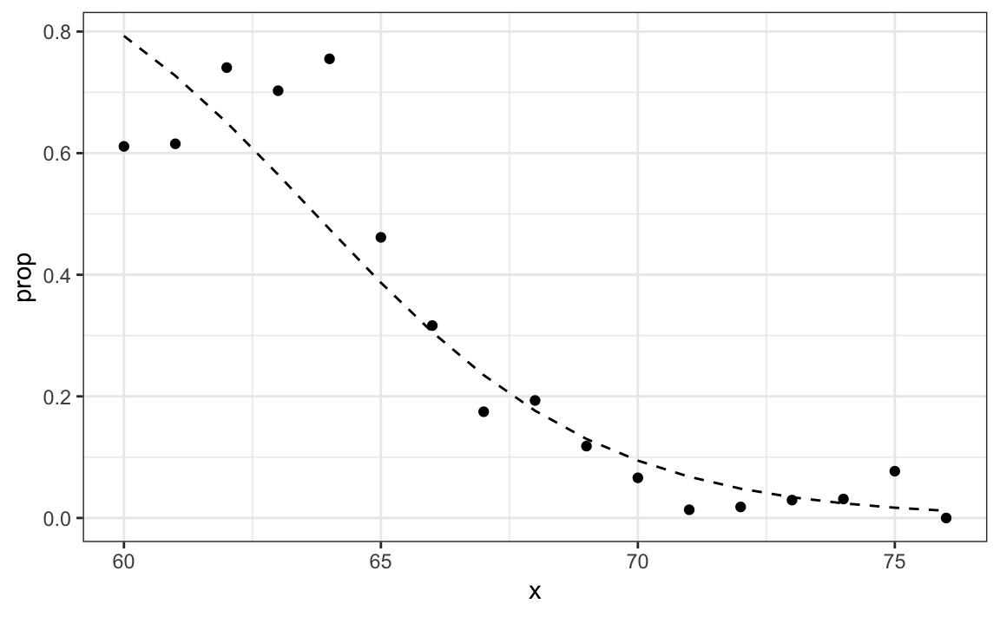
Because we have an estimate \(\hat{p}(x)\), we can obtain predictions:
y_hat_logit <- ifelse(p_hat_logit > 0.5, "Female", "Male") %>% factor
confusionMatrix(y_hat_logit, test_set$sex)[["Accuracy"]]
#> NULLThe resulting predictions are similar. This is because the two estimates of \(p(x)\) are larger than 1/2 in about the same region of x:
data.frame(x = seq(min(tmp$x), max(tmp$x))) %>%
mutate(logistic = plogis(glm_fit$coef[1] + glm_fit$coef[2]*x),
regression = lm_fit$coef[1] + lm_fit$coef[2]*x) %>%
gather(method, p_x, -x) %>%
ggplot(aes(x, p_x, color = method)) +
geom_line() +
geom_hline(yintercept = 0.5, lty = 5)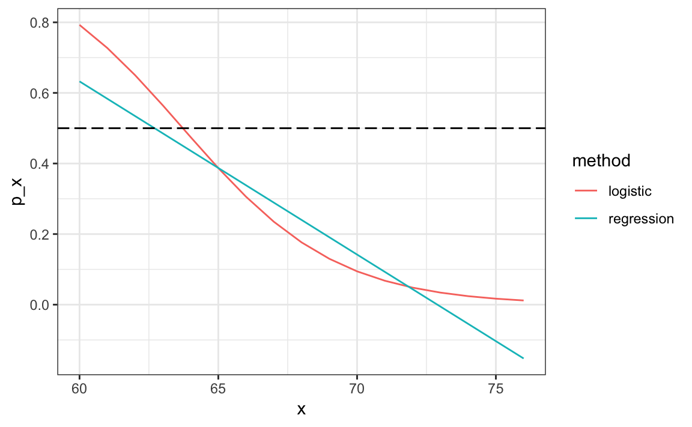
Both linear and logistic regressions provide an estimate for the conditional expectation:
\[ \mbox{E}(Y \mid X=x) \] which in the case of binary data is equivalent to the conditional probability:
\[ \mbox{Pr}(Y = 1 \mid X = x) \]
Once we move on to more complex examples, we will see that linear regression and generalized linear regression are limited and not flexible enough to be useful for most machine learning challenges. The techniques we learn are essentially approaches to estimating the conditional probability in a way that is more flexible.
31.2.2 Exercises
Define the following dataset:
make_data <- function(n = 1000, p = 0.5, mu_0 = 0, mu_1 = 2, sigma_0 = 1, sigma_1 = 1){ y <- rbinom(n, 1, p) f_0 <- rnorm(n, mu_0, sigma_0) f_1 <- rnorm(n, mu_1, sigma_1) x <- ifelse(y == 1, f_1, f_0) test_index <- createDataPartition(y, times = 1, p = 0.5, list = FALSE) list(train = data.frame(x = x, y = as.factor(y)) %>% slice(-test_index), test = data.frame(x = x, y = as.factor(y)) %>% slice(test_index)) } dat <- make_data()Note that we have defined a variable
xthat is predictive of a binary outcomey.dat$train %>% ggplot(aes(x, color = y)) + geom_density()Compare the accuracy of linear regression and logistic regression.
Repeat the simulation from exercise 1 100 times and compare the average accuracy for each method and notice they give practically the same answer.
Generate 25 different datasets changing the difference between the two class:
delta <- seq(0, 3, len = 25). Plot accuracy versusdelta.
31.3 K-nearest neighbors
Let’s get back to our digits data with the two predictors.
library(tidyverse)
library(dslabs)
data("mnist_27")
mnist_27$test%>% ggplot(aes(x_1, x_2, color = y)) + geom_point()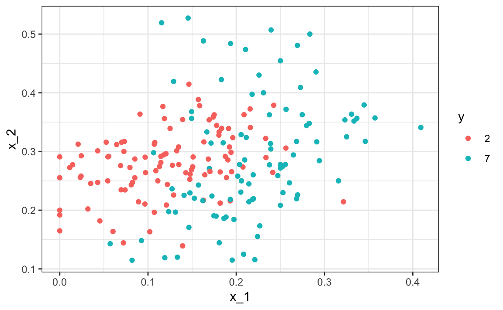
To see how this relates to smoothing, we can think of how we would estimate the conditional probability:
\[ p(x_1, x_2) = \mbox{Pr}(Y=1 \mid X_1=x_1 , X_2 = x_2). \]
The 0s and 1s we observe are “noisy” because for some regions the probabilities \(p(x_1, x_2)\) are not that close to 0 or 1. So we need to estimate \(p(x_1, x_2)\). How do we do this? We can try smoothing.
K-nearest neighbors (kNN) is similar to bin smoothing, but it is easier to adapt to multiple dimensions. We first define the distance between all observations based on the features. Basically, for any point \((x_1,x_2)\) for which we want an estimate of \(p(x_1, x_2)\), we look for the \(k\) nearest points and then take an average of these 0s and 1s associated with these points. We refer to the set of points used to compute the average and the neighborhood. Due to the connection we described earlier between conditional expectations and conditional probabilities, this gives us an \(\hat{p}(x_1,x_2)\), just like the bin smoother gave us an estimate of a trend.
We can now control the flexibility of our estimate through \(k\): larger \(k\)s result in smoother estimates, while smaller \(k\)s result in more flexible and more wiggly estimates.
As an example, let’s use logistic regression as the standard we need to beat.
library(caret)
fit_glm <- glm(y ~ x_1 + x_2, data=mnist_27$train, family="binomial")
p_hat_logistic <- predict(fit_glm, mnist_27$test)
y_hat_logistic <- factor(ifelse(p_hat_logistic > 0.5, 7, 2))
confusionMatrix(data = y_hat_logistic, reference = mnist_27$test$y)$overall["Accuracy"]
#> Accuracy
#> 0.76Now compare to kNN. We will use the knn3 function from the caret package. Looking at the help file of this package, we can see that we can call it in one of two ways. In the first, we specify a formula and a data frame. The data frame contains all the data to be used. The formula has the from outcome ~ predictor_1 + predictor_2 + predictor_3 and so on. Therefore, we would type y ~ x_1 + x_2. If we are going to use all the predictors, we can use the . like this y ~ .. The final call looks like this:
knn_fit <- knn3(y ~ ., data = mnist_27$train)The second way to call this function is with the first argument being the matrix of predictors and the second a vector of outcomes. So the code would look like this:
x <- as.matrix(mnist_27$train[,2:3])
y <- mnist_27$train$y
knn_fit <- knn3(x, y)For this function, we also need to pick a parameter: the number of neighbors to include. Let’s start with the default \(k=5\).
knn_fit <- knn3(y ~ ., data = mnist_27$train, k = 5)In this case, since our dataset is balanced and we care just as much about sensitivity as we do about specificity, we will use accuracy to quantify performance.
The predict function for knn produces a probability for each class. So we keep the probability of being a 7 as the estimate \(\hat{p}(x_1, x_2)\)
y_hat_knn <- predict(knn_fit, mnist_27$test, type = "class")
confusionMatrix(data = y_hat_knn, reference = mnist_27$test$y)$overall["Accuracy"]
#> Accuracy
#> 0.815This already beats the logistics model. To see why this is case, we will plot \(\hat{p}(x_1, x_2)\) and compare it to the the true conditional probability \(p(x_1, x_2)\):
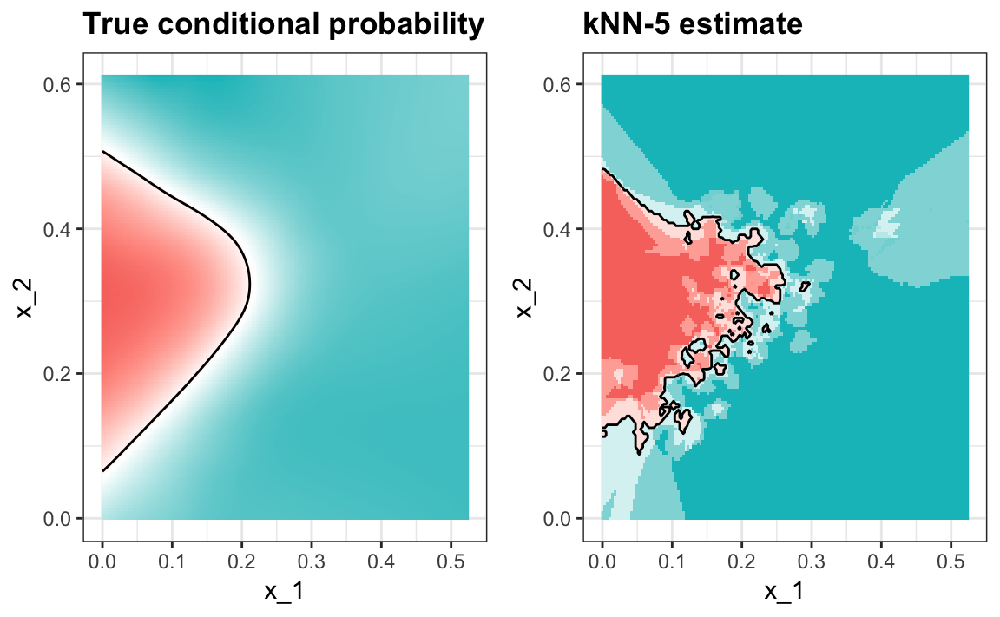
In the estimate, we see some islands of blue in the red area. Intuitively, this does not make much sense. This is due to what we call over training. We describe over-training in detail below, but note that we have higher accuracy in the train set compared to the test set:
y_hat_knn <- predict(knn_fit, mnist_27$train, type = "class")
confusionMatrix(data = y_hat_knn, reference = mnist_27$train$y)$overall["Accuracy"]
#> Accuracy
#> 0.882
y_hat_knn <- predict(knn_fit, mnist_27$test, type = "class")
confusionMatrix(data = y_hat_knn, reference = mnist_27$test$y)$overall["Accuracy"]
#> Accuracy
#> 0.81531.3.1 Over training
Over-training is at its worst when we set \(k=1\). With \(k=1\) the estimate for each \((x_1, x_2)\) in the training set is obtained with just the \(y\) corresponding to that point. So, in this case, if the \((x_1, x_2)\) are unique, we will obtain perfect accuracy in the training set because each point is used to predict itself. Remember that if the predictors are not unique and have different outcomes for at least one set of predictors then it is impossible to predict perfectly.
Here we fit a kNN model with \(k=1\):
knn_fit_1 <- knn3(y ~ ., data = mnist_27$train, k = 1)
y_hat_knn_1 <- predict(knn_fit_1, mnist_27$train, type = "class")
confusionMatrix(data=y_hat_knn_1, reference=mnist_27$train$y)$overall[["Accuracy"]]
#> [1] 0.995However, the test set accuracy is actually worse than logistics regression:
y_hat_knn_1 <- predict(knn_fit_1, mnist_27$test, type = "class")
confusionMatrix(data=y_hat_knn_1, reference=mnist_27$test$y)$overall["Accuracy"]
#> Accuracy
#> 0.745We can see the over-fitting problem in this figure. 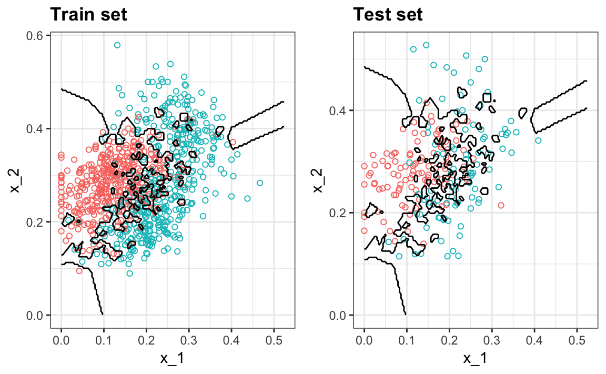
The black curves denote the decision rule boundaries.
The estimate \(\hat{p}(x_1, x_2)\) follows the training data too closely (left). You can see that in the training set, boundaries have been drawn to perfectly surround a single red point in a sea of blue. Because most points \((x_1, x_2)\) are unique, the prediction is either 1 or 0 and the prediction for that point is the associated label. However, once we introduce the training set (right), we see that many of these small islands now have the opposite color and we end up making several incorrect predictions.
31.3.2 Over-smoothing
Although not as badly as with the previous examples, we saw that with \(k=5\) we also over-trained. Hence, we should consider a larger \(k\). Let’s try, as an example, a much larger number: \(k=401\).
knn_fit_401 <- knn3(y ~ ., data = mnist_27$train, k = 401)
y_hat_knn_401 <- predict(knn_fit_401, mnist_27$test, type = "class")
confusionMatrix(data=y_hat_knn_401, reference=mnist_27$test$y)$overall["Accuracy"]
#> Accuracy
#> 0.79This turns out to be similar to logistic regression: 
This size of \(k\) is so large that it does not permit enough flexibility. We call this over smoothing.
31.3.3 Picking the \(k\) in kNN
So how do we pick \(k\)?
Let’s repeat what we did above but for different values of \(k\):
ks <- seq(3, 251, 2)Now we use the map_df function to repeat the above for each one. For comparative purposes, we will compute the accuracy by using both the training set (incorrect) and the test set (correct):
library(purrr)
accuracy <- map_df(ks, function(k){
fit <- knn3(y ~ ., data = mnist_27$train, k = k)
y_hat <- predict(fit, mnist_27$train, type = "class")
cm_train <- confusionMatrix(data = y_hat, reference = mnist_27$train$y)
train_error <- cm_train$overall["Accuracy"]
y_hat <- predict(fit, mnist_27$test, type = "class")
cm_test <- confusionMatrix(data = y_hat, reference = mnist_27$test$y)
test_error <- cm_test$overall["Accuracy"]
tibble(train = train_error, test = test_error)
})We can now plot the accuracy against the value of \(k\):
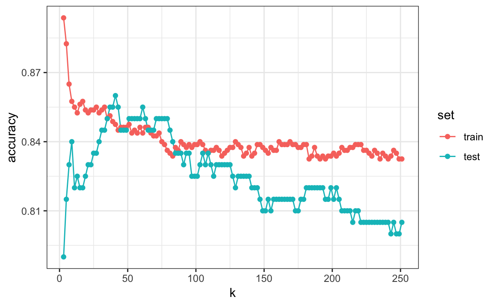
First, note that the accuracy versus \(k\) plot is quite jagged. We do not expect this because small changes in \(k\) should not affect the algorithm’s performance too much. The jaggedness is explained by the fact that the accuracy is computed on a sample and therefore is a random variable. This demonstrates why we prefer to minimize the expectation loss rather than the loss we observe with one dataset. We will soon learn a better way of estimating this expected loss. Despite the noise present in the plot above, we still see a general pattern. Low values of \(k\) give low test set accuracy but high train set accuracy, which is evidence of over-training. Large values of \(k\) result in low accuracy, which is evidence of over-smoothing. The maximum is achieved somewhere between 25 and 41 with a maximum accuracy of 0.85. In fact, the resulting estimate with \(k=41\) looks quite similar to the true conditional probability:
The final accuracy for this value of \(k\) is:
max(accuracy$test)
#> [1] 0.86So is this what we should expect if we apply this algorithm in the real world? The answer is “no” because we broke a golden rule of machine learning: we selected the \(k\) using the test set. So how do we select the \(k\) in the real world? In the next section, we introduce the important concept of cross validation which provides a way to estimate the expected loss for any given method using only the training set.
31.3.4 Exercises
Earlier, we used logistic regression to predict sex from height. Use kNN to do the same. Use the code described in this chapter to select the \(F_1\) measure and plot it against \(k\). Compare to the \(F_1\) of about 0.6 we obtained with regression.
Here we will use the same gene expression example used in the Distance Chapter exercises. You can load it like this:
data("tissue_gene_expression")Split the data in training and test sets, then see what accuracy you obtain. Try it for \(k = 1, 3, \dots, 11\).
31.4 Generative models
We have described how, when using squared loss, the conditional expectation/probabilities provide the best approach to developing a decision rule. In a binary case, the smallest true error we can achieve is determined by Bayes’ rule, which is a decision rule based on the true conditional probability:
\[ p(\mathbf{x}) = \mbox{Pr}(Y=1 \mid \mathbf{X}=\mathbf{x}) \]
We have described several approaches to estimating \(p(\mathbf{x})\). In all these approaches, we estimate the conditional probability directly and do not consider the distribution of the predictors. In machine learning, these are referred to as discriminative approaches.
However, Bayes’ theorem tells us that knowing the distribution of the predictors \(\mathbf{X}\) may be useful. Methods that model the joint distribution of \(Y\) and \(\mathbf{X}\) are referred to as generative models (we model how the entire data, \(\mathbf{X}\) and \(Y\), are generated). We start by describing the most general generative model, Naive Bayes, and then proceed to describe two specific cases, quadratic discriminant analysis (QDA) and linear discriminant analysis (LDA).
31.4.1 Naive Bayes
Recall that Bayes rule tells use that we can rewrite \(p(\mathbf{x})\) like this:
\[ p(\mathbf{x}) = \mbox{Pr}(Y=1|\mathbf{X}=\mathbf{x}) = \frac{f_{\mathbf{X}|Y=1}(\mathbf{x}) \mbox{Pr}(Y=1)} { f_{\mathbf{X}|Y=0}(\mathbf{x})\mbox{Pr}(Y=0) + f_{\mathbf{X}|Y=1}(\mathbf{x})\mbox{Pr}(Y=1) } \]
with \(f_{\mathbf{X}|Y=1}\) and \(f_{\mathbf{X}|Y=0}\) representing the distribution functions of the predictor \(\mathbf{X}\) for the two classes \(Y=1\) and \(Y=0\). The formula implies that if we can estimate these conditional distributions of the predictors, we can develop a powerful decision rule. However, this is a big if. As we go forward, we will encounter examples in which \(\mathbf{X}\) has many dimensions and we do not have much information about the distribution. In these cases, Naive Bayes will be practically impossible to implement. However, there are instances in which we have a small number of predictors (not much more than 2) and many categories in which generative models can be quite powerful. We describe two specific examples and use our previously described case studies to illustrate them.
Let’s start with a very simple and uninteresting, yet illustrative, case: the example related to predicting sex from height.
library(tidyverse)
library(caret)
library(dslabs)
data("heights")
y <- heights$height
set.seed(1995)
test_index <- createDataPartition(y, times = 1, p = 0.5, list = FALSE)
train_set <- heights %>% slice(-test_index)
test_set <- heights %>% slice(test_index)In this case, the Naive Bayes approach is particularly appropriate because we know that the normal distribution is a good approximation for the conditional distributions of height given sex for both classes \(Y=1\) (female) and \(Y=0\) (Male). This implies that we can approximate the conditional distributions \(f_{X|Y=1}\) and \(f_{X|Y=0}\) by simply estimating averages and standard deviations from the data:
params <- train_set %>%
group_by(sex) %>%
summarize(avg = mean(height), sd = sd(height))
params
#> # A tibble: 2 x 3
#> sex avg sd
#> <fct> <dbl> <dbl>
#> 1 Female 65.1 3.43
#> 2 Male 69.2 3.55The prevalence, which we will denote with \(\pi = \mbox{Pr}(Y=1)\), can be estimated from the data with:
pi <- train_set %>% summarize(pi=mean(sex=="Female")) %>% pull(pi)
pi
#> [1] 0.214Now we can use our estimates of average and standard deviation to get an actual rule:
x <- test_set$height
f0 <- dnorm(x, params$avg[2], params$sd[2])
f1 <- dnorm(x, params$avg[1], params$sd[1])
p_hat_bayes <- f1*pi / (f1*pi + f0*(1 - pi))Our Naive Bayes estimate \(\hat{p}(x)\) looks a lot like our logistic regression estimate:

In fact, we can show that the Naive Bayes approach is similar to the logistic regression prediction mathematically. However, we leave the demonstration to a more advanced text, such as this one. We can see that they are similar empirically by comparing the two resulting curves.
31.4.2 Controlling prevalence
One useful feature of the Naive Bayes approach is that it includes a parameter to account for differences in prevalence. Using our sample, we estimated \(f_{X|Y=1}\), \(f_{X|Y=0}\) and \(\pi\). If we use hats to denote the estimates, we can write \(\hat{p}(x)\) as:
\[ \hat{p}(x)= \frac{\hat{f}_{X|Y=1}(x) \hat{\pi}} { \hat{f}_{X|Y=0}(x)(1-\hat{\pi}) + \hat{f}_{X|Y=1}(x)\hat{\pi} } \]
As we discussed earlier, our sample has a much lower prevalence, 0.21, than the general population. So if we use the rule \(\hat{p}(x)>0.5\) to predict females, our accuracy will be affected due to the low sensitivity:
y_hat_bayes <- ifelse(p_hat_bayes > 0.5, "Female", "Male")
sensitivity(data = factor(y_hat_bayes), reference = factor(test_set$sex))
#> [1] 0.349Again, this is because the algorithm gives more weight to specificity to account for the low prevalence:
specificity(data = factor(y_hat_bayes), reference = factor(test_set$sex))
#> [1] 0.945This is due mainly to the fact that \(\hat{\pi}\) is substantially less than 0.5, so we tend to predict Male more often. It makes sense for a machine learning algorithm to do this in our sample because we do have a higher percentage of males. But if we were to extrapolate this to a general population, our overall accuracy would be affected by the low sensitivity.
The Naive Bayes approach gives us a direct way to correct this since we can simply force \(\hat{\pi}\) to be whatever value we want it to be. So to balance specificity and sensitivity, instead of changing the cutoff in the decision rule, we could simply change \(\hat{\pi}\) to 0.5 like this:
p_hat_bayes_unbiased <- f1 * 0.5 / (f1 * 0.5 + f0 * (1 - 0.5))
y_hat_bayes_unbiased <- ifelse(p_hat_bayes_unbiased> 0.5, "Female", "Male")Note the difference in sensitivity with a better balance:
sensitivity(data = factor(y_hat_bayes_unbiased), reference = factor(test_set$sex))
#> [1] 0.778
specificity(data = factor(y_hat_bayes_unbiased), reference = factor(test_set$sex))
#> [1] 0.743The new rule also gives us a very intuitive cutoff between 66-67, which is about the middle of the female and male average heights:
qplot(x, p_hat_bayes_unbiased, geom = "line") +
geom_hline(yintercept = 0.5, lty = 2) +
geom_vline(xintercept = 67, lty = 2)
31.4.3 Quadratic Discriminant Analysis
Quadratic Discriminant Analysis (QDA) is a version of Naive Bayes in which we assume that the distributions \(p_{\mathbf{X}|Y=1}(x)\) and \(p_{\mathbf{X}|Y=0}(\mathbf{x})\) are multivariate normal. The simple example we described in the previous section is actually QDA. Let’s now look at a slightly more complicated case: the 2 or 7 example.
data("mnist_27")In this case, we have two predictors so we assume each one is bivariate normal. This implies that we need to estimate two averages, two standard deviations, and a correlation for each case \(Y=1\) and \(Y=0\). Once we have these, we can approximate the distributions \(f_{X_1,X_2|Y=1}\) and \(f_{X_1, X_2|Y=0}\). We can easily estimate parameters from the data:
params <- mnist_27$train %>%
group_by(y) %>%
summarize(avg_1 = mean(x_1), avg_2 = mean(x_2),
sd_1= sd(x_1), sd_2 = sd(x_2),
r = cor(x_1, x_2))
params
#> # A tibble: 2 x 6
#> y avg_1 avg_2 sd_1 sd_2 r
#> <fct> <dbl> <dbl> <dbl> <dbl> <dbl>
#> 1 2 0.129 0.283 0.0702 0.0578 0.401
#> 2 7 0.234 0.288 0.0719 0.105 0.455Here we provide a visual way of showing the approach. We plot the data and use contour plots to give an idea of what the two estimated normal densities look like (we show the curve representing a region that includes 95% of the points):
mnist_27$train %>% mutate(y = factor(y)) %>%
ggplot(aes(x_1, x_2, fill = y, color=y)) +
geom_point(show.legend = FALSE) +
stat_ellipse(type="norm", lwd = 1.5)
This defines the following estimate of \(f(x_1, x_2)\).
We can use the train function from the caret package, described in detail in Section 33, to fit the model and obtain predictors.
library(caret)
train_qda <- train(y ~ ., method = "qda", data = mnist_27$train)We see that we obtain relatively good accuracy:
y_hat <- predict(train_qda, mnist_27$test)
confusionMatrix(data = y_hat, reference = mnist_27$test$y)$overall["Accuracy"]
#> Accuracy
#> 0.82The estimated conditional probability looks relatively good, although it does not fit as well as the kernel smoothers:

One reason QDA does not work as well as the kernel methods is perhaps because the assumption of normality does not quite hold. Although for the 2s it seems reasonable, for the 7s it does seem to be off. Notice the slight curvature in the points for the 7s:
mnist_27$train %>% mutate(y = factor(y)) %>%
ggplot(aes(x_1, x_2, fill = y, color=y)) +
geom_point(show.legend = FALSE) +
stat_ellipse(type="norm") +
facet_wrap(~y)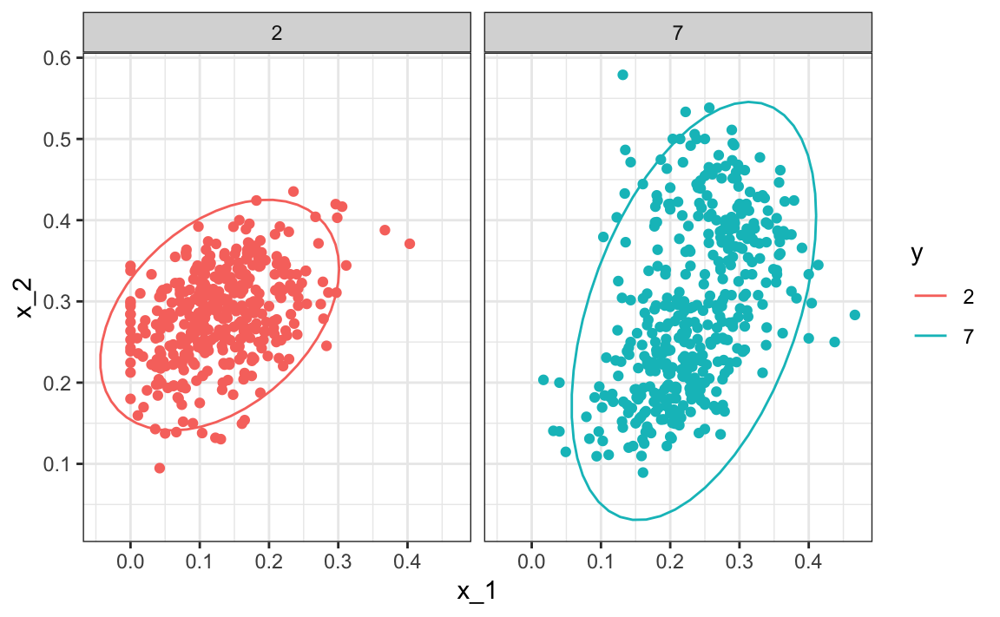
QDA can work well here, but it becomes harder to use as the number of predictors increases. Here we have 2 predictors and had to compute 4 means, 4 SDs and 2 correlations. How many parameters would we have if instead of 2 predictors, we had 10? The main problem comes from estimating correlations for 10 of predictors. With 10, we have 45 correlations for each class. In general, the formula is \(K\times p(p-1)/2\) which gets big fast. Once the number of parameters approaches the size of our data, the method becomes unpractical due to overfitting.
31.4.4 Linear discriminant analysis
A relatively simple solution to the problem of having too many parameters is to assume that the correlation structure is the same for all classes, which reduces the number of parameters we need to estimate.
In this case, we would compute just one pair of standard deviations and one correlation, so the parameters would look something like this:
params <- mnist_27$train %>%
group_by(y) %>%
summarize(avg_1 = mean(x_1), avg_2 = mean(x_2), sd_1= sd(x_1), sd_2 = sd(x_2), r = cor(x_1,x_2))
params <-params %>% mutate(sd_1 = mean(sd_1), sd_2=mean(sd_2), r=mean(r))
params
#> # A tibble: 2 x 6
#> y avg_1 avg_2 sd_1 sd_2 r
#> <fct> <dbl> <dbl> <dbl> <dbl> <dbl>
#> 1 2 0.129 0.283 0.0710 0.0813 0.428
#> 2 7 0.234 0.288 0.0710 0.0813 0.428and the distributions like this:

Now the size of the ellipses as well as the angle are the same. This is because they have the same standard deviations and correlations. When we force this assumption, we can show mathematically that the boundary is a line, just as with logistic regression. For this reason, we call the method linear discriminant analysis (LDA). Similarly, for QDA, we can show that the boundary must be a quadratic function.

In the case of LDA, the lack of flexibility does not permit us to capture the non-linearity in the true conditional probability function.
Note we can fit the LDA model using caret:
train_lda <- train(y ~ .,
method = "lda",
data = mnist_27$train)
y_hat <- predict(train_lda, mnist_27$test)
confusionMatrix(data = y_hat, reference = mnist_27$test$y)$overall["Accuracy"]
#> Accuracy
#> 0.7531.4.5 Connection to distance
The normal density is:
\[ p(x) = \frac{1}{\sqrt{2\pi} \sigma} \exp\left\{ - \frac{(x-\mu)^2}{\sigma^2}\right\} \]
If we remove the constant \(1/(\sqrt{2\pi} \sigma)\) and then take the log, we get:
\[ - \frac{(x-\mu)^2}{\sigma^2} \]
which is the negative of a distance squared scaled by the standard deviation. For higher dimensions, the same is true except the scaling is more complex and involves correlations.
31.4.6 Case study: more than three classes
We will briefly give a slightly more complex example: one with 3 classes instead of 2. We first create a dataset similar to the 2 or 7 dataset, except now we have 1s, 2s and 7s.
if(!exists("mnist")) mnist <- read_mnist()
set.seed(3456)
index_127 <- sample(which(mnist$train$labels %in% c(1,2,7)), 2000)
y <- mnist$train$labels[index_127]
x <- mnist$train$images[index_127,]
index_train <- createDataPartition(y, p=0.8, list = FALSE)
# get the quandrants
#temporary object to help figure out the quandrants
row_column <- expand.grid(row=1:28, col=1:28)
upper_left_ind <- which(row_column$col <= 14 & row_column$row <= 14)
lower_right_ind <- which(row_column$col > 14 & row_column$row > 14)
#binarize the values. Above 200 is ink, below is no ink
x <- x > 200
#cbind proportion of pixels in upper right quandrant and
##proportion of pixes in lower rigth quandrant
x <- cbind(rowSums(x[ ,upper_left_ind])/rowSums(x),
rowSums(x[ ,lower_right_ind])/rowSums(x))
train_set <- data.frame(y = factor(y[index_train]),
x_1 = x[index_train,1],
x_2 = x[index_train,2])
test_set <- data.frame(y = factor(y[-index_train]),
x_1 = x[-index_train,1],
x_2 = x[-index_train,2])Here is the training data:
train_set %>%
ggplot(aes(x_1, x_2, color=y)) +
geom_point()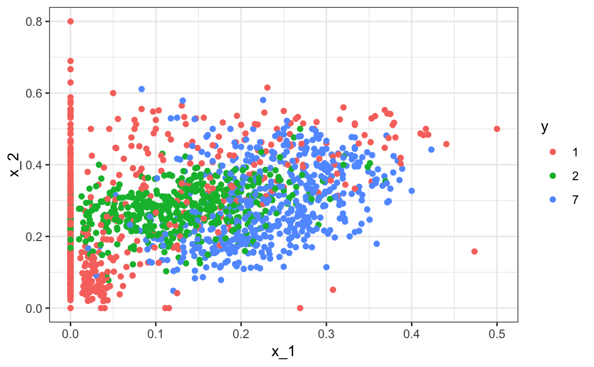
We use the caret package to train the QDA model:
train_qda <- train(y ~ ., method = "qda", data = train_set)Now we estimate three conditional probabilities (although they have to add to 1):
predict(train_qda, test_set, type = "prob") %>% head()
#> 1 2 7
#> 1 0.2223 0.660 0.1180
#> 2 0.1926 0.454 0.3539
#> 3 0.6275 0.322 0.0505
#> 4 0.0462 0.101 0.8529
#> 5 0.2167 0.623 0.1604
#> 6 0.1267 0.335 0.5383And our predictions are one of the three classes:
predict(train_qda, test_set) %>% head()
#> [1] 2 2 1 7 2 7
#> Levels: 1 2 7So the confusion matrix has a 3 by 3 table:
confusionMatrix(predict(train_qda, test_set), test_set$y)$table
#> Reference
#> Prediction 1 2 7
#> 1 111 17 7
#> 2 14 80 17
#> 7 19 25 109The actuary is:
confusionMatrix(predict(train_qda, test_set), test_set$y)$overal["Accuracy"]
#> Accuracy
#> 0.752For sensitivity and specificity, we have a pair of values for each class. To define these terms, we need a binary outcome. We therefore have three columns: one for each class as the positives and the other two as the negatives.
We can visualize what parts of the region are called 1, 2 and 7:
GS <- 150
new_x <- expand.grid(x_1 = seq(min(train_set$x_1), max(train_set$x_1), len=GS),
x_2 = seq(min(train_set$x_2), max(train_set$x_2), len=GS))
new_x %>% mutate(y_hat = predict(train_qda, new_x)) %>%
ggplot(aes(x_1, x_2, color = y_hat, z = as.numeric(y_hat))) +
geom_point(size = 0.5, pch = 16) +
stat_contour(breaks=c(1.5, 2.5),color="black") +
guides(colour = guide_legend(override.aes = list(size=2)))Here is what it looks like for LDA:
train_lda <- train(y ~ ., method = "lda", data = train_set)
confusionMatrix(predict(train_lda, test_set), test_set$y)$overal["Accuracy"]
#> Accuracy
#> 0.664The accuracy is much worse because the model is more rigid. This is what the decision rule looks like:

The results for kNN are much better:
train_knn <- train(y ~ ., method = "knn", tuneGrid = data.frame(k = seq(15, 51, 2)),
data = train_set)
confusionMatrix(predict(train_knn, test_set), test_set$y)$overal["Accuracy"]
#> Accuracy
#> 0.769with much better accuracy now. The decision rule looks like this:
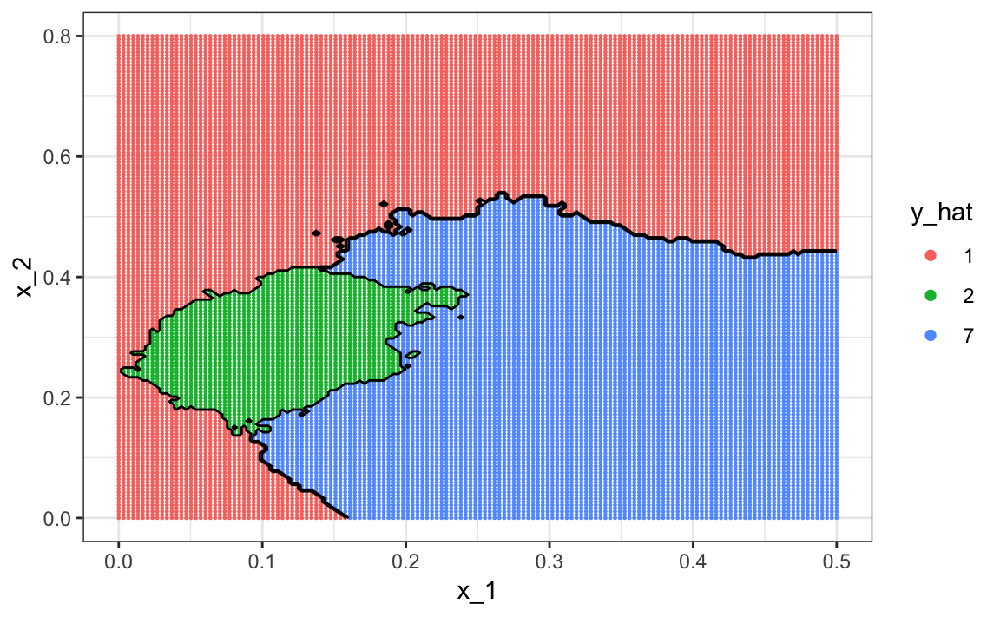
Note that the limitations of LDA are to the lack of fit of the normal assumption, in particular for class 1.
train_set %>% mutate(y = factor(y)) %>%
ggplot(aes(x_1, x_2, fill = y, color=y)) +
geom_point(show.legend = FALSE) +
stat_ellipse(type="norm") 
Generative models can be very powerful, but only when we are able to successfully approximate the joint distribution of predictors conditioned on each class.
31.4.7 Exercises
We are going to apply LDA and QDA to the tissue_gene_expression dataset. We will start with simple examples based on this dataset and then develop a realistic example.
Create a dataset with just the cerebella and hippocampi, two parts of the brain, and a predictor matrix with 10 randomly selected columns.
set.seed(1993) data("tissue_gene_expression") ind <- which(tissue_gene_expression$y %in% c("cerebellum", "hippocampus")) y <- droplevels(tissue_gene_expression$y[ind]) x <- tissue_gene_expression$x[ind, ] x <- x[, sample(ncol(x), 10)]Use the
trainfunction to estimate the accuracy of LDA.In this case, LDA fits two 10-dimensional normal distributions. Look at the fitted model by looking at the
finalModelcomponent of the result of train. Notice there is a component calledmeansthat includes the estimatemeansof both distribution. Plot the mean vectors against each other and determine which predictors (genes) appear to be driving the algorithm.Repeat exercises 1 with QDA. Does it have a higher accuracy than LDA?
Are the same predictors (genes) driving the algorithm? Make a plot as in exercise 2.
One thing we see in the previous plot is that the value of predictors correlate in both groups: some predictors are low in both groups while others high in both groups. The mean value of each predictor or
colMeans(x)is not informative or useful for prediction and often for interpretation purposes it is useful to center or scale each column. This can be achieved with thepreProcessingargument in train. Re-run LDA withpreProcessing = "scale". Note that accuracy does not change but see how it is easier to identify the predictors that differ more between groups in the plot made in exercise 4.In the previous exercises we saw that both approaches worked well. Plot the predictor values for the two genes with the largest differences between the two groups in a scatter plot to see how they appear to follow a bivariate distribution as assumed by the LDA and QDA approaches. Color the points by the outcome.
Now we are going to increase the complexity of the challenge slightly: we will consider all the tissue types.
set.seed(1993) data("tissue_gene_expression") y <- tissue_gene_expression$y x <- tissue_gene_expression$x x <- x[, sample(ncol(x), 10)]What accuracy do you get with LDA?
We see that the results are slightly worse. Use the
confusionMatrixfunction to learn what type of errors we are making.Plot an image of the centers of the seven 10-dimensional normal distributions
31.5 Classification and Regression Trees (CART)
31.5.1 The curse of dimensionality
We described how methods such as LDA and QDA are not meant to be used with many predictors \(p\) because the number of parameters that we need to estimate becomes too large. For example, with the digits example \(p=784\), so we would have over 600,000 parameters with LDA and we would multiply that by the number of classes for QDA. Kernel methods such as kNN or local regression do not have model parameters to estimate. However, they also face a challenge when multiple predictors are used due to what is referred to the curse of dimensionality. The dimension here refers to the fact that when we have \(p\) predictors, the distance between two observations is computed in \(p\)-dimensional space.
A useful way of understanding the curse of dimensionality is by considering how large we have to make a span/neighborhood/window to include a given percentage of the data. Remember that with larger neighborhoods, our methods lose flexibility.
For example, suppose we have one continuous predictor with equally spaced points in the [0,1] interval and we want to create windows that include 1/10-th of data. Then it’s easy to see that our windows have to be of size 0.1:

Now, for two predictors, if we decide to keep the neighborhood just as small, 10% for each dimension, we include only 1 point:

If we want to include 10% of the data, then we need to increase the size of each side of the square to \(\sqrt{.10} \approx .316\):
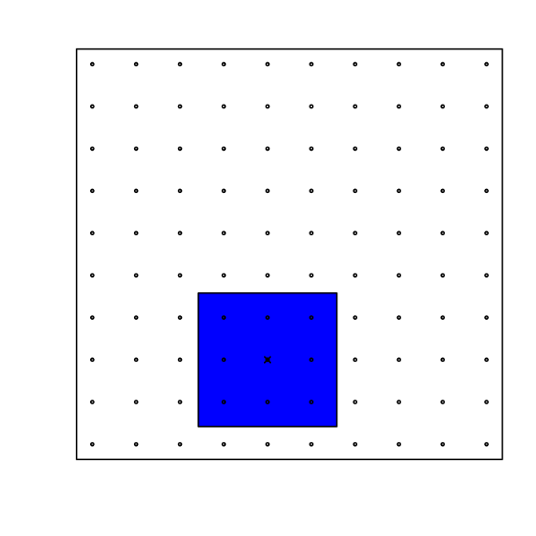
Using the same logic, if we want to include 10% of the data in a three dimensional space, then the side of each cube is \(\sqrt[3]{.10} \approx 0.464\). In general, to include 10% of the data in a case with \(p\) dimensions, we need an interval with each side of size \(\sqrt[p]{.10}\) of the total. This proportion gets close to 1 quickly and if the proportion is 1, it means we include all the data and are no longer smoothing.
library(tidyverse)
p <- 1:100
qplot(p, .1^(1/p), ylim = c(0,1))
So by the time we reach 100 predictors, the neighborhood is no longer very local, as each side covers almost the entire dataset.
Here we look at a set of elegant and versatile methods that adapt to higher dimensions and also allow these regions to take more complex shapes while still producing models that are interpretable. These are very popular, well-known and studied methods. We will concentrate on Regression and Decision Trees and their extension to Random Forests.
31.5.2 CART motivation
To motivate this section, we will use a new dataset that includes the breakdown of the composition of olive oil into 8 fatty acids:
library(tidyverse)
library(dslabs)
data("olive")
olive %>% tbl_df
#> # A tibble: 572 x 10
#> region area palmitic palmitoleic stearic oleic linoleic linolenic
#> * <fct> <fct> <dbl> <dbl> <dbl> <dbl> <dbl> <dbl>
#> 1 South… Nort… 10.8 0.75 2.26 78.2 6.72 0.36
#> 2 South… Nort… 10.9 0.73 2.24 77.1 7.81 0.31
#> 3 South… Nort… 9.11 0.54 2.46 81.1 5.49 0.31
#> 4 South… Nort… 9.66 0.570 2.4 79.5 6.19 0.5
#> 5 South… Nort… 10.5 0.67 2.59 77.7 6.72 0.5
#> 6 South… Nort… 9.11 0.49 2.68 79.2 6.78 0.51
#> # ... with 566 more rows, and 2 more variables: arachidic <dbl>,
#> # eicosenoic <dbl>For illustrative purposes, we will try to predict the region using the fatty acid composition values as predictors.
table(olive$region)
#>
#> Northern Italy Sardinia Southern Italy
#> 151 98 323We remove the area column because we won’t use it as a predictor.
olive <- select(olive, -area)Let’s very quickly try to predict the region using kNN:
library(caret)
fit <- train(region ~ ., method = "knn",
tuneGrid = data.frame(k = seq(1, 15, 2)),
data = olive)
ggplot(fit)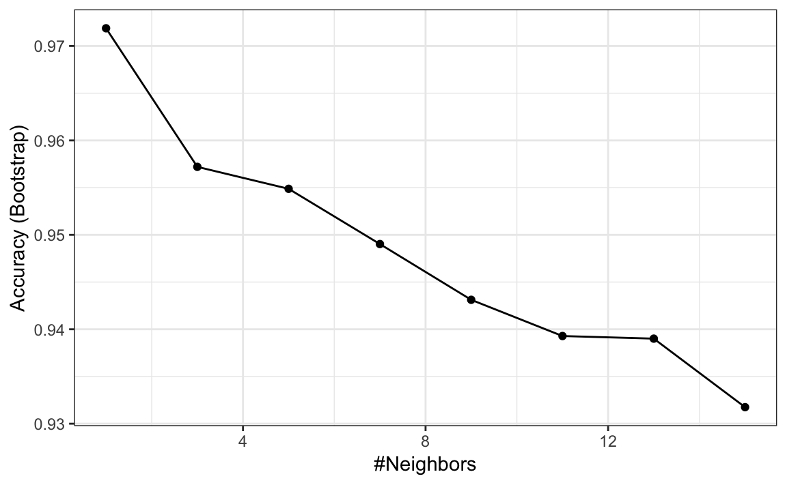
We see that using just one neighbor, we can predict relatively well. However, a bit of data exploration reveals that we should be able to do even better. For example, if we look at the distribution of each predictor stratified by region we see that eicosenoic is only present in Southern Italy and that linolenic separates Northern Italy from Sardinia.
olive %>% gather(fatty_acid, percentage, -region) %>%
ggplot(aes(region, percentage, fill = region)) +
geom_boxplot() +
facet_wrap(~fatty_acid, scales = "free")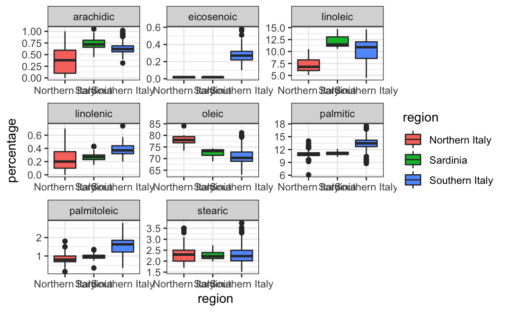
This implies that we should be able to build an algorithm that predicts perfectly! We can see this clearly by plotting the values for eicosenoic and linoleic.
p <- olive %>%
ggplot(aes(eicosenoic, linoleic, color = region)) +
geom_point()
pIn Section 35.2.4 we defined predictor spaces. The predictor space are eight-dimensional points with values between 0 and 100. In the plot above, we show the space defined by the two predictors eicosenoic and linoleic, and, by eye, we can construct a prediction rule that partitions the predictor space so that each partition contains only outcomes of a one category. This in turn can be used to define an algorithm with perfect accuracy.
p + geom_vline(xintercept = 0.065, lty = 2) +
geom_segment(x = -0.2, y = 10.54, xend = 0.065, yend = 10.54, color = "black", lty = 2)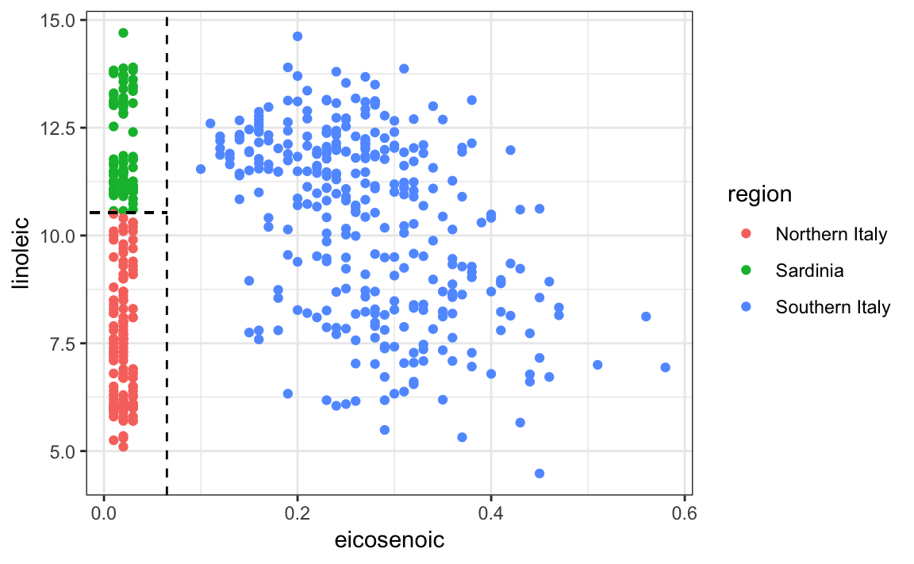
Specifically, we define the following decision rule. If eicosenoic is larger than 0.065, predict Southern Italy. If not, then if linolenic is larger than \(10.535\), predict Sardinia and if lower, predict Northern Italy. We can draw this decision tree like this:
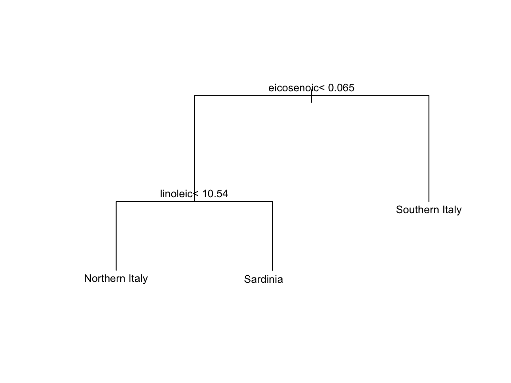
Decision trees like this are often used in practice. For example, to decide if a person is at risk of having a heart attack, doctors use the following:

(Source: Walton 2010 Informal Logic, Vol. 30, No. 2, pp. 159-184)
A tree is basically a flow chart of yes or no questions. The general idea of the methods we are describing is to define an algorithm that uses data to create these trees with predictions at the ends, referred to as nodes. Regression and decision trees operate by predicting an outcome variable \(Y\) by partitioning the predictors.
31.5.3 Regression trees
When the outcome is continuous, we call the method a regression tree. To introduce regression trees, we will use the 2008 poll data used in previous sections to describe the basic idea of how we build these algorithms. As with other machine learning algorithms, we will try to estimate the conditional expectation \(f(x) = \mbox{E}(Y | X = x)\) with \(Y\) the poll margin and \(x\) the day.
data("polls_2008")
qplot(day, margin, data = polls_2008)
The general idea here is to build a decision tree and, at end of each node, obtain a predictor \(\hat{y}\). A mathematical way to describe this is to say that we are
partitioning the predictor space into \(J\) non-overlapping regions, \(R_1, R_2, \ldots, R_J\) and then for any predictor \(x\) that falls within region \(R_j\), estimate \(f(x)\) with the average of the training observations \(y_i\) for which the associated predictor \(x_i\) in also in \(R_j\).
But how do we decide on the partition \(R_1, R_2, \ldots, R_J\) and how do we choose \(J\)? Here is where the algorithm gets a bit complicated.
Regression trees create partitions recursively. We start the algorithm with one partition, the entire predictor space. In our simple first example this space is the interval [-155, 1]. But after the first step we will have two partitions. After the second step we will split one of these partitions into two and will have three partitions. Then four, then five, and so one. We describe how we pick the partition to further partition, and when to stop, later.
Once we select a partition to split, to create the new partitions, we find a predictor \(j\) and value \(s\) that define two new partitions, we will call them \(R_1(j,s)\) and \(R_2(j,s)\), that split our observations in the current partition, referred to as \(\mathbf{x}\), by asking if \(x_j\) is bigger than \(s\):
\[ R_1(j,s) = \{\mathbf{x} \mid x_j < s\} \mbox{ and } R_2(j,s) = \{\mathbf{x} \mid x_j \geq s\} \]
In our example we only have on predictor, so we will always chose \(j=1\), but in general this will not be the case. Now, after we define the new partitions \(R_1\) and \(R_2\), and we decide to stop the partitioning, we compute predictors by taking the average of all the observations \(y\) for which the associated \(\mathbf{x}\) is in \(R_1\) and \(R_2\). We refer to these two as \(\hat{y}_{R_1}\) and \(\hat{y}_{R_2}\) respectively.
But how do we pick \(j\) and \(s\)? Basically we find the pair that minimizes the residual sum of square (RSS): \[ \sum_{i:\, x_i \in R_1(j,s)} (y_i - \hat{y}_{R_1})^2 + \sum_{i:\, x_i \in R_2(j,s)} (y_i - \hat{y}_{R_2})^2 \]
This is then applied recursively to the new regions \(R_1\) and \(R_2\). We described how we stop later, but once we are done partitioning the predictor space into regions, in each region a prediction is made using the observations in that region.
Let’s take a look at what this algorithm does on the 2008 presidential election poll data. We will use the rpart function in the rpart package.
library(rpart)
fit <- rpart(margin ~ ., data = polls_2008)Here, there is only one predictor. So we do not have to decide which predictor \(j\) to split by, we simply have to decide what value \(s\) we use to split. We can visually see where the splits were made:
plot(fit, margin = 0.1)
text(fit, cex = 0.75)
The first split is made on day 39.5. One of those regions is then split at day 86.5. The two resulting new partitions are split on days 49.5 and 117.5 respectively, and so on. We end up with 8 partitions. The final estimate \(\hat{f}(x)\) looks like this:
polls_2008 %>%
mutate(y_hat = predict(fit)) %>%
ggplot() +
geom_point(aes(day, margin)) +
geom_step(aes(day, y_hat), col="red")
Note that the algorithm stopped partitioning at 8. Now we explain how this decision is made.
First we need to define the term complexity parameter (cp). Every time we split and define two new partitions, our training set RSS decreases. This is because with more partitions, our model has more flexibility to adapt to the training data. In fact, if you split until every point is its own partition, then RSS goes all the way down to 0 since the average of one value is that same value. To avoid this, the algorithm sets a minimum for how much the RSS must improve for another partition to be added. This parameter is referred to as the complexity parameter (cp). The RSS must improve by a factor of cp for the new partition to be added. Large value of cp will therefore force the algorithm to stop earlier which result in less nodes.
However, cp is not the only parameter used to decide if we should partition a current partition or not. Another common parameter is the minimum number of observations required in a partition before partitioning it further. The argument used in the rpart function is minsplit and the default is 20. The rpart implementation of regression trees also permits users to determine a minimum number observations in each node. The argument is minbucket and defaults to round(minsplit/3).
As expected, if we set cp = 0 and minsplit=2, then our prediction is as flexible as possible and our predictor is our original data:
fit <- rpart(margin ~ ., data = polls_2008, control = rpart.control(cp = 0, minsplit = 2))
polls_2008 %>%
mutate(y_hat = predict(fit)) %>%
ggplot() +
geom_point(aes(day, margin)) +
geom_step(aes(day, y_hat), col="red")
Intuitively we know that this is not a good approach as it will generally result in over-training. These cp, minsplit and minbucket three parameters can be used to control the variability of the final predictors. The larger these values are the more data is averaged to compute a predictor and thus reduce variability. The drawback is that it restrict flexibility.
So how do we pick these parameters? We can use cross validation, described in Section 32, just like with any tuning parameter. Here is an example of using cross validation to chose cp.
library(caret)
train_rpart <- train(margin ~ .,
method = "rpart",
tuneGrid = data.frame(cp = seq(0, 0.05, len = 25)),
data = polls_2008)
ggplot(train_rpart)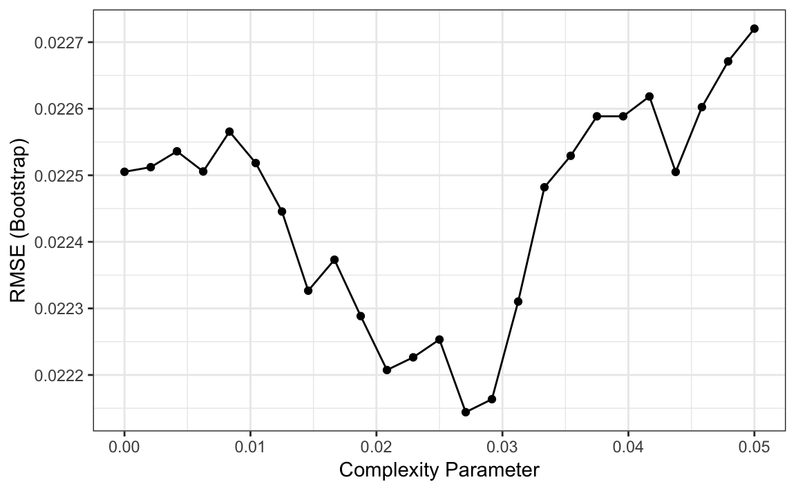
To see the resulting tree, we access the finalModel and plot it:
plot(train_rpart$finalModel, margin = 0.1)
text(train_rpart$finalModel, cex = 0.75)
And because we only have one predictor, we can actually plot \(\hat{f}(x)\):
polls_2008 %>%
mutate(y_hat = predict(train_rpart)) %>%
ggplot() +
geom_point(aes(day, margin)) +
geom_step(aes(day, y_hat), col="red")
Note that if we already have a tree and want apply a higher cp value we can use the prune function. We call this pruning tree because we are snipping of partitions that do not meet a cp criterion. We previously create a tree that used a cp = 0 and saved it to fit. We can prune it like this:
pruned_fit <- prune(fit, cp = 0.01)31.5.4 Classification (decision) trees
Classification, or decision trees, are used in classification problems where the outcome is categorical. We use the same partitioning principle with some differences to account for the fact that we are now working with a categorical outcome.
The first difference is that rather than taking the average in each partition (we can’t take the average of categories), we form predictions by calculating which class is the most common among the training set observations within the partition.
The second is that we can no longer use RSS to decide on the partition. While we could use the naive approach of looking for partitions that minimize training error, better performing approaches use more sophisticated metrics. Two of the more popular ones are the Gini Index and Entropy.
In a perfect scenario, the outcomes in each of our partitions are all of the same category since this will permit perfect accuracy. The Gini Index is going to be 0 in this scenario, and become larger the more we deviate from this scenario. To define the Gini Index, we define \(\hat{p}_{j,k}\) as the proportion of observations in partition \(j\) that are of class \(k\). The Gini Index is defined as
\[ \mbox{Gini}(j) = \sum_{k=1}^K \hat{p}_{j,k}(1-\hat{p}_{j,k}) \]
If you study the formula carefully you will see that it is in fact 0 in the perfect scenario described above.
Entropy is a very similar quantity, defined as
\[ \mbox{entropy}(j) = -\sum_{k=1}^K \hat{p}_{j,k}\log(\hat{p}_{j,k}), \mbox{ with } 0 \times \log(0) \mbox{ defined as }0 \]
Let us look at how a classification tree performs on the digits example we examined before:
We can use this code to run the algorithm and plot the resulting tree:
train_rpart <- train(y ~ .,
method = "rpart",
tuneGrid = data.frame(cp = seq(0.0, 0.1, len = 25)),
data = mnist_27$train)
plot(train_rpart)
The accuracy achieves by this approach is better than regression’s, but is not as good as what we achieved with kernel methods:
confusionMatrix(predict(train_rpart, mnist_27$test), mnist_27$test$y)$overall["Accuracy"]
#> Accuracy
#> 0.82The plot of the estimate conditional probability shows us the limitations of classification trees:
Note that with with decision trees, it is difficult to make the boundaries smooth since each partition creates a discontinuity.
Classification trees have certain advantages that make them very useful. They are highly interpretable, even more so than linear models. They are easy to visualize (if small enough). Finally, they can model a human decision processes and don’t require that dummy predictors for categorical variables be used. On the other hand, the approach via recursive partitioning can easily over-train and is therefore a bit harder to train than, for example, linear regression or kNN. Furthermore, in terms of accuracy, it is rarely the best performing method since it is not very flexible and is highly unstable to changes in training data. Random Forests, explained next, improve on several of these shortcomings.
31.6 Random Forests
Random Forests are a very popular machine learning approach that addresses the shortcomings of decision trees using a clever idea. The goal is to improve prediction performance and reduce instability by averaging multiple decision trees (a forest of trees constructed with randomness). It has two features that help accomplish this.
The first step is bootstrap aggregation or bagging. The general idea is to generate many predictors, each using regression or classification trees, and then forming a final prediction based on the average prediction of all these trees. To assure that the trees are the same we use the bootstrap to induce randomness. These two combined explain the name: the bootstrap makes the individual trees randomly different, and the combination of trees is the forest. The specific steps are as follows.
Build \(B\) decision trees using the training set. We refer to the fitted models as \(T_1, T_2, \dots, T_B\). We later explain how we assure they are different.
For every observation in the test set, form a prediction \(\hat{y}_j\) using tree \(T_j\).
For continuous outcomes, form a final prediction with the average \(\hat{y} = \frac{1}{B} \sum_{j=1}^B \hat{y}_j\). For categorical data classification, predict \(\hat{y}\) with majority vote (most frequent class among \(\hat{y}_1, \dots, \hat{y}_T\)).
So how do we get different decision trees from a single training set?
For this, we use the randomness in two ways which we explain in the steps below. Let \(N\) be the number of observations in the training set. To create \(T_j, \, j=1,\ldots,B\) from the training set we do the following:
Create a bootstrap training set by sampling \(N\) observations from the training set with replacement. This is the first way in induce randomness.
A large number of features is typical in a machine learning challenges. Often, many features can be informative but including them all in the model may result in overfitting. The second way Random Forests induce randomness is by randomly selecting features to be included in the building of each tree. A different random subset is selected for each tree. This reduces correlation between trees in the forest, thereby improving prediction accuracy.
To illustrate how the first steps can result in smoother estimates we will demonstrate by fitting a Random Forest to the 2008 polls data. We will use the randomForest function in the randomForest package:
library(randomForest)
fit <- randomForest(margin~., data = polls_2008) Note that if you apply the function plot to the resulting object, stored in fit, we see the how the error rate of our algorithm changes as we add trees.
plot(fit)
We can see that in this case, the accuracy improves as we add more trees until about 300 t where accuracy stabilizes.
The resulting estimate for this random forest can be seen like this:
polls_2008 %>%
mutate(y_hat = predict(fit, newdata = polls_2008)) %>%
ggplot() +
geom_point(aes(day, margin)) +
geom_line(aes(day, y_hat), col="red")
Notice that the random forest estimate is much smoother than what we achieved with the regression tree in the previous section. This is possible because the average of many step function can be smooth. We can see this by visually examining how the estimate changes as we add more trees. In the following figure you see each of bootstrap samples for several values if \(b\) and for each one we see the tree that is fitted in grey, the previous trees that were fitted in lighter grey, and the result of averaging all the trees estimated up to that point.

Here is the Random Forest fit for our digits example based on two predictors:
library(randomForest)
train_rf <- randomForest(y ~ ., data=mnist_27$train)
confusionMatrix(predict(train_rf, mnist_27$test), mnist_27$test$y)$overall["Accuracy"]
#> Accuracy
#> 0.79Here is what the conditional probabilities look like:

Visualizing the estimate shows that, although we obtain high accuracy, it appears that there is room for improvement by making the estimate smoother. This could be achieved by changing the parameter that controls the minimum number of data points in the nodes of the tree. The larger this minimum the smoother the final estimate will be. We can train the parameters of the Random Forest. Below, we use the caret package to optimize over the minimum node size. To do this with the caret package we need to use another implementation random that permits us to optimize for this parameter. The function Rborist of the Rborist permits this. We can run cross validation to chose this parameter using this code:
train_rf_2 <- train(y ~ .,
method = "Rborist",
tuneGrid = data.frame(predFixed = 2, minNode = c(3, 50)),
data = mnist_27$train)
confusionMatrix(predict(train_rf_2, mnist_27$test), mnist_27$test$y)$overall["Accuracy"]
#> Accuracy
#> 0.795The selected model improves accuracy and provides a smoother estimate.

Random Forrest perform better in all the examples we have considered. However, a disadvantage of Random Forests is that we lose interpretability. An approach that helps with interpretability is to examine variable importance. To define variable importance we counts how often a predictor is used in the individual trees. You can learn more about variable importance in an advanced machine learning book. The caret package includes the function varImp that extracts variable importance from any model in which the calculation is implemented. We give an example on how we use variable importance in the next section.
31.6.1 Exercises
Create a simple dataset where the outcomes grows 0.75 units on average for every increase in a predictor.
n <- 1000 sigma <- 0.25 x <- rnorm(n, 0, 1) y <- 0.75 * x + rnorm(n, 0, sigma) dat <- data.frame(x = x, y = y)Use
rpartto fit a regression tree and save the result tofit.Plot the final tree so that you can see where the partitions occurred.
Make a scatter plot of
yversusxalong with the predicted values based on the fit.Now run Random Forests instead of a regression tree using
randomForestfrom the randomForest package, and remake the scatterplot with the prediction line.Use the function
plotto see if the Random Forest has converged or if we need more trees.It seems that the default values for the Random Forest result in an estimate that is too flexible (not smooth). Re-run the Random Forest but this time with
nodesizeset at 50 andmaxnodesset at 25. Remake the plot.We see that this yields smoother results. Let’s use the train function to help us pick these values. From the caret description of methods we see that we can’t tune the
maxnodesparameter or thenodesizeargument withrandomForests. So we will use the Rborist package and tune theminNodeargument. Use thetrainfunction to try valuesminNode <- seq(5, 250, 25). See which value minimizes the estimated RMSE.Make a scatterplot along with the prediction from the best fitted model.
Use the
rpartfunction to fit a classification tree to thetissue_gene_expressiondataset. Use thetrainfunction to estimate the accuracy. Try outcpvalues ofseq(0, 0.05, 0.01). Plot the accuracy to report the results of the best model.Study the confusion matrix for the best fitting classification tree. What do you observe happening for placenta?
Notice that placentas are called endometriums more often than placenta. Note also that the number of placentas is just six, and that, by default,
rpartrequires 20 observations before splitting a node. So it is difficult to have a node in which placentas are the majority. Rerun the above analysis but this time permitrpartto split any node by using the argumentcontrol = rpart.control(minsplit = 0). Does the accuracy increase? Look at the confusion matrix again.Plot the tree from the best fitting model obtained in exercise 11.
We can see that with just six genes, we are able to predict the tissue type. Now let’s see if we can do even better with a Random Forest. Use the
trainfunction and therfmethod to train a Random Forest. Try out values ofmtryranging from, at least,seq(50, 200, 25). Whatmtryvalue maximizes accuracy? To permit smallnodesizeto grow as we did with the classification trees, use the following argument:nodesize = 1. This will take several seconds to run. If you want to test it out, try using smaller values withntree. Set the seed to 1990.Use the function
varImpon the output oftrainand save it to an object calledimp.The
rpartmodel we ran above produced a tree that used just six predictors. Extracting the predictor names is not straightforward, but can be done. If the output of the call to train wasfit_rpart, we can extract the names like this:ind <- !(fit_rpart$finalModel$frame$var == "<leaf>") tree_terms <- fit_rpart$finalModel$frame$var[ind] %>% unique() %>% as.character() tree_termsWhat is the variable importance in the Random Forest call for these predictors? Where do they rank?
Advanced: Extract the top 50 predictors based on importance, take a subset of
xwith just these predictors and apply the functionheatmapto see how these genes behave across the tissues. We will introduce theheatmapfunction in the Section 36.In this chapter, we illustrated a couple of machine learning algorithms on a subset of the MNIST dataset. Try fitting a model to the entire dataset.